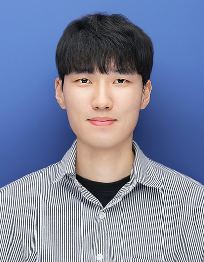

Continual Learning
Mitigating catastrophic forgetting while learning from non-stationary data streams.
AI Graduate Researcher · Research Engineer
Hello, my name is Gyutae Oh. I am currently conducting research in artificial intelligence at Media System Lab (MSL) under the supervision of Professor Jitae Shin at Sungkyunkwan University.
My primary research interest lies in efficient learning in artificial intelligence, with a focus on Continual Learning, Anomaly Detection, and Medical Image Analysis. At present, I am working on mitigating catastrophic forgetting by combining Continual Learning with Data Distillation techniques.
If you are interested in my research or would like to connect, please feel free to reach out. I look forward to the opportunity to collaborate in the future. Thank you.

If you’d like to collaborate or chat, feel free to reach out.
I’m open to research collaborations and engineering opportunities related to continual learning, anomaly detection, and medical AI.
Research interests and what I care about.
I conduct research on efficient learning in artificial intelligence, focusing on Continual Learning, Anomaly Detection, and Medical Image Analysis. Currently, I work on mitigating catastrophic forgetting by combining Continual Learning with Data Distillation techniques.
Academic background.
Short summaries of what I study and why it matters.
Mitigating catastrophic forgetting while learning from non-stationary data streams.
Detecting abnormal patterns reliably with practical constraints on data and supervision.
Learning representations and segmentation models for medical imaging tasks with reliable generalization.
Selected projects spanning robotics and medical AI.
Developed an automated serving robot by combining object detection and SLAM for robust navigation and task execution in indoor environments.
Built a mobile assistant application to support detection of canine ocular diseases. Recognized with Hanium awards (Finalist & Silver Prize).
Participated in AI CHAMPION program at Sungkyunkwan University (details to be added).
Collaborated with clinicians at Kangbuk Samsung Hospital to develop AI models for diagnosing exposure keratitis and predicting severity from anterior segment photographs, aiming to reduce diagnostic burden for patients with limited access to care. Resulted in one paper at a MICCAI 2025 workshop and one domestic patent application under review; continued into Year 2 for model efficiency work.
Continuing the collaboration with Kangbuk Samsung Hospital to improve real-world applicability through model compression and performance enhancements. Planning an international submission (MICCAI) and aiming to secure additional domestic/international patent(s).
Conference/journal/workshop/poster/seminar entries.
Scholarships, awards, and selected recognitions.
Patent applications and related technical contributions.